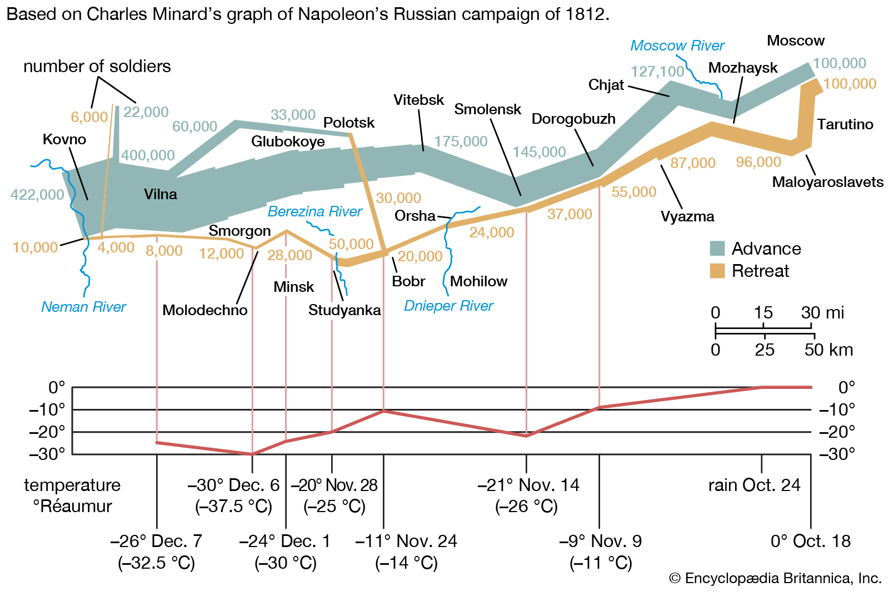

Como livrar a Ciência dos males que lhe aflige? Falamos com a incrível Ana Ribeiro sobre o plot twist da carreira e em que ela pode nos iluminar. O que fazer com tantos problemas: a depreciação salarial e do trabalho em geral, as condições tóxicas, problemas de representatividade estrutural, preparação para o mercado profissional fora e dentro dela. Mas também, como SE salvar da Ciência quando ela já não é mais uma opção saudável mas a lavagem espiritual da academia já nem te permite desejar além?
Representação numérica metafórica da carreira de cientista 
Sinche M, Next Gen PhD: A Guide to Career Paths in Science, Harvard University Press 2016
Julie Gold, The postdoc series: The plight of the postdoc, Nature Jobs Blog 2015
Música: Alcova Rubra - I; (incidental) Deolinda - Bote Furado
February 5, 2021